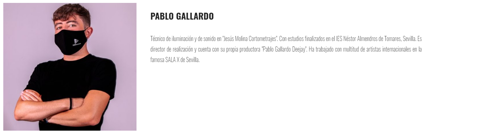
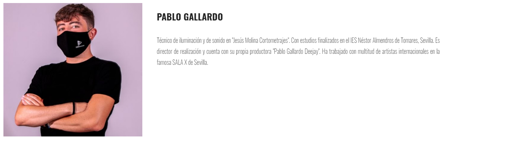
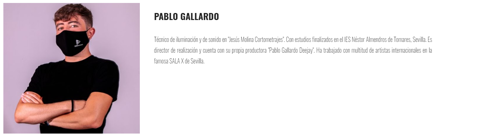

Jesús Molina Cortometrajes ha trabajado en distintas producciones juveniles; dos de ellas, participantes en varios festivales y concursos de cortometrajes de ficción.
La productora, se encuentra a día de hoy inmersa en su nueva obra "Un Café A Las Diez".
